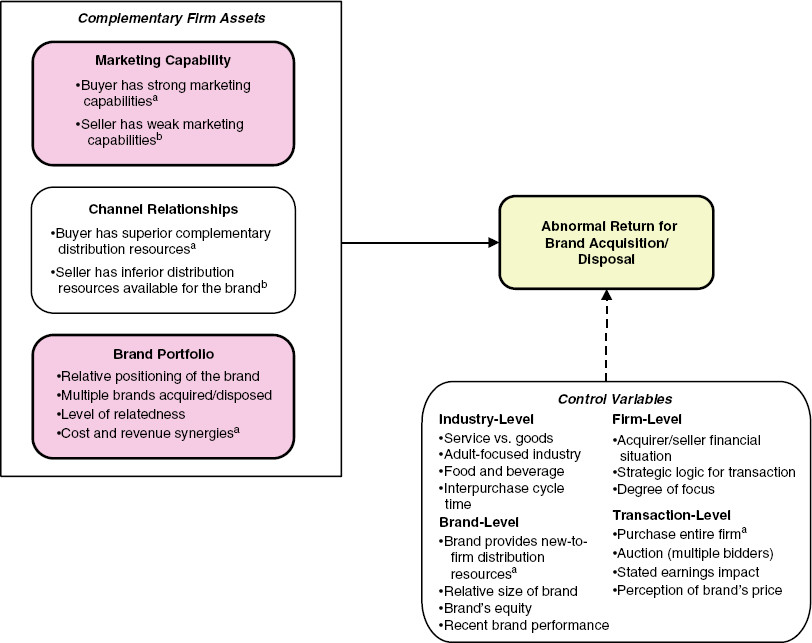

8.9 Branding Portfolio Management
8.9.1 Brand Architecture/Portfolio
- Firms may increase portfolio profitability by eliminating versions of lower-tier brands, but the proportion of upper-tier brands to lower-tier brands moderates benefits.
(V. R. Rao, Agarwal, and Dahlhoff 2004) Corporate branding strategy association with intangible value (Tobin’s q)
House of brands
Branded house: greater efficiency and lower customization and cannibalization, more potential risk(V. R. Rao, Agarwal, and Dahlhoff 2004)
Corporate branding strategy is associated with higher Tobin’s q, mixed branding strategy is associated with lower values of Tobin’s q
(Neil A. Morgan and Rego 2009b)
Brand portfolio characteristics
Number of brand owned
Number of segments
Degree to which the brands compete with one another
Consumer perceptions of the quality and price of the brands
- Corporate branding is favored by both service and consumer durables companies than consumer nondurables ones.
(Hsu, Fournier, and Srinivasan 2015)
An extension of (V. R. Rao, Agarwal, and Dahlhoff 2004)
House of brands
Branded house
Sub-branding (e.g., Intel Pentium): has both the brand and corporate brand name (high risk high return option)
Endorsed branding: the second brand is more prominent graphically than the parent brand (reduced risk).
Hybrid branding: Combine all four above options.
Examine idiosyncratic risk
Brand reputation risk
Brand dilution risk
Brand cannibalization risk
Brand stretch risk
8.9.1.1 Brand and Line extension
(Lane and Jacobson 1995): Stock Market Reactions to Brand Extension Announcements
- Negative impact: when familiarity is disproportionately higher than esteem or vice versa.
8.9.1.2 Brand alliances and co-branding
(Samu, Krishnan, and Smith 1999): impact of advertising alliances on new brand introductions
- Degree of complementary, type of differentiation, processing strategies employed by consumers of ad alliances affect ad effectiveness.
(Cao and Sorescu 2013): Stock Market Reactions to the Introduction of Cobranded Products
Consumer react: signal of firm innovativeness, improved quality, trust
Investor react: positively to consistency between co-brand partners and exclusive partnerships.
(Robinson, Tuli, and Kohli 2015): Structure of licensing agreements on shareholder value
(Cao and Yan 2017): brand value on brand alliance outcome
- Moderated by the value differential between partner brands and the level of past exploitation fo the target brand
(A. R. Rao, Qu, and Ruekert 1999; Simonin and Ruth 1998): A brand alliance’s reputation affects its alliance partners.
(Washburn, Till, and Priluck 2004): When judging the quality of a product with an important quality that can’t be seen, consumers’ views of the product’s quality are improved when it is paired with a second brand that is seen as vulnerable to consumer sanctions.
(J. Singh, Crisafulli, and Quamina 2020) Preventable, highly controllable, and purposeful crises are bad to the reputation of the culpable ally. Deny reaction is effective in repairing company image despite being inferior to decrease and acknowledge/rebuild responses. In addition, we show that the non-culpable partner suffers from crises only indirectly, as a result of negative post-crisis sentiments against the partnership
(Rindfleisch and Moorman 2001)
- Although embeddedness increases both the acquisition and utilization of information in alliances, redundancy decreases the acquisition of information but increases its utilization.
(Swaminathan and Moorman 2009): Marketing Alliances
8.9.1.3 Brand acquisitions and disposals
Positive abnormal stock market returns when acquirers have stronger marketing capabilities, low product diversification, higher positioning, high cost synergies and low sales synergies (Swaminathan et al. 2022, 649)
(Bahadir, Bharadwaj, and Srivastava 2008): The value of the target company’s brands is favorably influenced by its marketing capabilities and its brand portfolio diversification.
(Jit Singh Mann and Kohli 2012): Brand Acquisitions Create Wealth for Acquiring Company Shareholders
(Newmeyer, Swaminathan, and Hulland 2016): brand acquisitions
(Wiles, Morgan, and Rego 2012): The Effect of Brand Acquisition and Disposal on Stock Returns
The results of brand acquisition and disposal (not symmetric) depend on
marketing capabilities (stronger)
channel relationships (Sellers with worse channel partnerships and those selling several brands, brands with lower price/quality positioning, and unrelated products have higher abnormal returns)
brand portfolios (buying brands with higher price/quality positioning than their existing portfolio)
Investors reward purchasers who find cost savings when integrating new brands, but penalize those who find revenue synergies.
This paper is different from (Bahadir, Bharadwaj, and Srivastava 2008)
View from the perspective of shareholder (not manager)
Examine brand asset transactions from both the buyer and seller shareholders’ perspectives
Brand assets acquisition and disposal is different from sale of entire firms
Examine net shareholder wealth created.
Hypotheses
A firm’s marketing capability is “its ability to define, develop, and deliver value to customers by combining and deploying its available resources.” (p. 40)
A firm’s channel relationships is “the extent and nature of its connections with channel partners.” (p. 41)
Brand portfolio was looked at from the perspective of quality/price positioning, relative positioning of the brand involved in the transaction and (3) cost vs. revenue synergies
Method
Sample: (n = 322) in 31 B2C industries from 1994 to 2008, exclude non-G7 countries and noncusumser food service channel (not convincing).
Event search: from SDC platinum database, firms’ annual reports, investor relations material, press releases on firms’ websites, Factiva search.
Event description:
Disposal event: “An announcement of a sale or pending sale of a brand, identified through a Factiva search of company news releases and press reports” (p. 43)
Acquisition event: “An announcement that an agreement has been reached to acquire a brand.”
Confounding event: earnings announcements, stock splits, key executive changes, unexpected stock buybacks, changes in dividends within the two-trading day window surrounding the event. (McWilliams and Siegel 1997)
Measures
Marketing capability: used an input-output approach
Marketing capability is “its ability to use available resources to create market-based, intangible asset value.” (p. 43) following (Srivastava, Shervani, and Fahey 1998a)
Use a stochastic frontier estimation (CFE) marketing capability operationalization (Shantanu Dutta, Narasimhan, and Rajiv 1999), where the (1) resource inputs are each firm’s sales, general and admin, ad expense (from compustat) and number of trademarks owned (from the USPTO database) and (2) resource output variable used the intangible asset value of the firm (Tobin’s q) following (Simon and Sullivan 1993) (might consider using Total Q here) adjusted for the variance accounted for by the firm’s technology (R&D spending and the number of patents) and management quality (“maagnement quality” score from Fortune’s Most Admired American Companies database where it was available, and top management team compensation relative to the industry average as an alternative management quality indicators for the remaining observations).
Regress technology and management quality indicators on the firm’s Tobin’s q and used the residual from this regression as the market-based value created by the firm output indicator in the SF.
Need to verify the face validity of the measure by looking at the correlation with firm’s future cash flow performance.
Distribution resources and portfolio characteristics and cost vs. revenue synergies measures were weak (based on coders).
Control for diversification in business.

Ten studies demonstrate negative brand reactions can be explained by perceived loss of brand’s unique values.
Negative effect of acquisitions depends on:
Acquired brand’s values
Brand age
Leadership continuity
Alignment between acquiring and acquired brands
Research covers a range of methods, designs, product categories, and brands.
Explanation for negative brand reactions is based on the “values authenticity account.”
8.9.1.4 Ingredient Branding
(Swaminathan, Reddy, and Dommer 2011)
Significant behavioral spillover impact of cobranded product trial on host and ingredient brands.
- This impact is bigger among non-loyal past consumers of the host and ingredient brands and when perceived fit is higher.
Data: AC Nielsen scanner panel data
8.9.2 Brand Extensions
- The perceived compatibility between the parent brand and an extension product is the single most critical factor in determining the level of success achieved by a brand extension.
- Transferring brand equity is made easier when there is a high degree of resemblance between the parent brand and the expansion category.
- The impact of perceived fit can be overridden by the influence of key brand associations, which can form the basis of fit between a parent brand and an extension brand.
(Heath, DelVecchio, and McCarthy 2011)
- The reach of high-quality brands can be significantly greater than that of low-quality brands.
- How the stock market reacts to using brands in new ways depends on how well known and respected the brands are.
(Völckner and Sattler 2006) Drivers of Brand Extension Success
(Hsu, Fournier, and Srinivasan 2015)
- The most valuable increase in firm value comes from subbranding, but it also has the most risk.
(Swaminathan, Fox, and Reddy 2001)
brand extension is a strategy that a brand attaches its brand name to a new product in a different product category.
Contribution:
Empirically, there is a positive reciprocal effects of extension trial on parent brand (more intense for prior non-users of the parent brand). Also evidence for potential negative of extension failure on the parent brand (and again for more loyal customers).
Experience with parent brand influences extension trial, but not extension repeat.
Moderating role of category similarity in the effect of brand extension on parent brand has been seen in an attitudinal context (effect might be overstated in lab setting (Dacin and Smith 1994)), but non in an actual purchase context.
Study 1: main effect (brand extension effect on parent brand choice): use binary logit instead of traditional multinomial logit in brand choice modeling because the latter cannot capture incremental effect of the loyalty coefficient.
Limitation: did not consider sequential introduction in the second study, which is later addressed by (Swaminathan 2003) (likely similar dataset and the takeaway is that prior experience with the parent brand and intervening extension influences purchase behavior of later brand extension for those with low loyalty towards the parent brand).
(P. Malhotra and Bhattacharyya 2022)
Use Twitter followership data, authors identify brand extension or co-branding opportunities based on common followership patterns.
Introduce brand transcendence construct: “measures the extension which a brand’s followers overlap with those of other brands in a new category.”
Identify conditions in which low fit brand extension that can be beneficial
For context dependent individuals, benefit-based on can help increase the evaluation of low fit extensions, but providing attribute-based info can decrease the favorable evaluation of low fit extension via reliance on extension fit
For context independent individuals, they base their judgment on extension fit regardless of info provided
Not surprisingly, the high fit extension is unaffected by context dependence and type of information.
Corporate acquisitions are a common means by which large firms enter new markets.
Large acquirers’ entry into new markets can affect the strategies and performance of incumbent firms in those markets.
Incumbent firms are more likely to align their product mix strategy with that of the acquisitive entrant if the incumbent is large, the acquirer’s past performance has been strong, and the market served by the incumbent is small. However, large incumbents that deviate from acquirers’ product mix strategy perform better than other incumbents do.